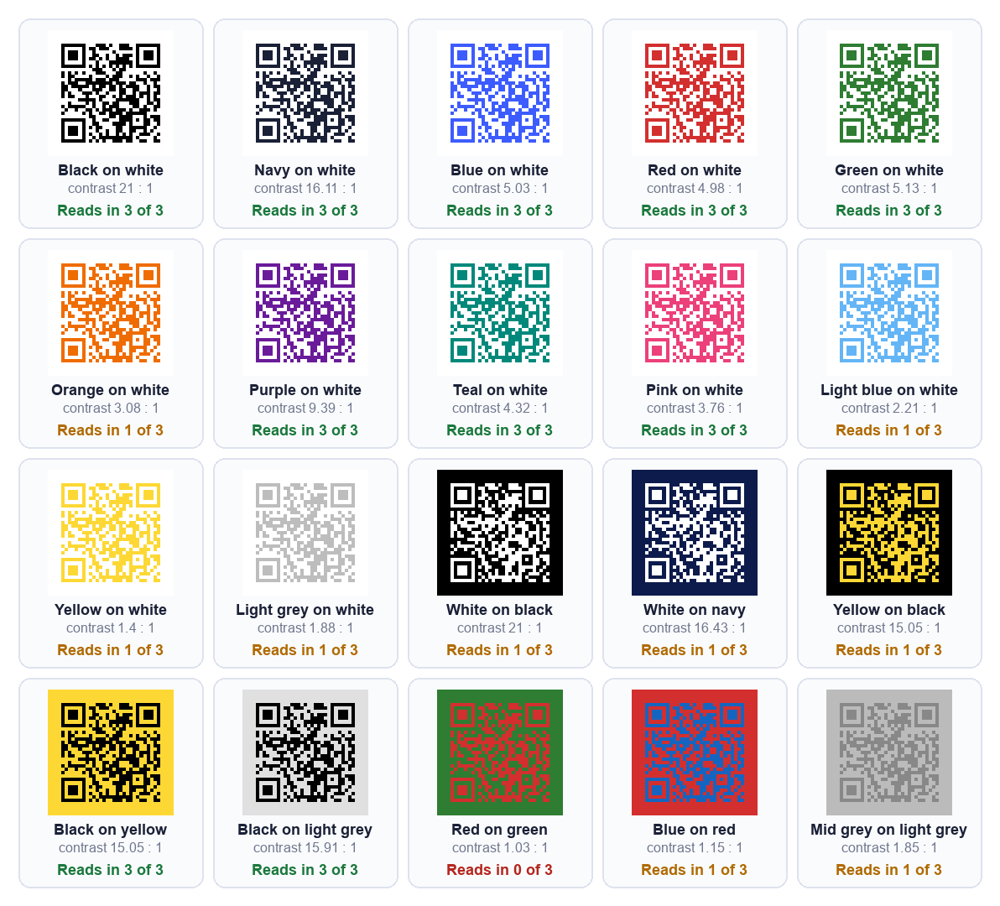

When a QR code is made inside a design tool, it becomes just another element on the page. That is convenient, and it is exactly why the checks below get skipped: the code gets the same attention as a decorative shape.
A QR code is not decoration. It either scans or it does not, and you will find out which after the print run. These six checks take about ten minutes and they apply to a code from any source.
What this guide covers, and what it does not
What we could and could not check
We are a competing QR code site, so here is exactly where our knowledge stops. Canva's website did not let us read its pages, because it blocks automated requests. That means we did not read what Canva says about its plans, limits or expiry, and this guide makes no claims about them. Where a detail depends on Canva, we say so and point you to Canva's own help pages.
What we can say from the pages' own titles, as shown in search results on 5 October 2026, is that Canva publishes a help page on creating and managing QR codes, a separate help page on dynamic QR codes, and lists a static QR code app in its marketplace. Read those for anything specific to Canva.
Why the checks still apply
A QR code is a pattern that holds text. Whatever made it, the same physics decides whether a camera can read it. Everything below is about the code, not the tool, and every number comes from tests we ran ourselves.
1. Is the code static or dynamic?
Why it matters more than anything else
A static code holds your actual address. A dynamic code holds a short address on somebody else's server, which then redirects to yours. Static codes have nothing behind them that can lapse. Dynamic codes work only while whoever runs the redirect keeps it working.
If you are printing a lot of something, this is the check that can quietly sink the whole run. Our guide to static vs dynamic QR codes covers the tradeoff.
How to tell in ten seconds
Scan the finished code with a plain QR scanner and read the address it shows. We tested our own scanner on two codes, and it displayed the exact address inside each one.

We go through this check in detail, step by step, in does a Canva QR code expire.
2. Is there enough contrast?
Dark on light, with room to spare
Brand colours are the reason people reach for a designer tool, and colour is where codes fail most quietly. In our test of 20 colour pairs on one code, every dark on light pair with contrast of about 4 to 1 or better was read by every decoder we tried.
What we measured

Pink on white at 3.76 to 1 read everywhere, while orange at 3.08 to 1 did not. Light on dark was a separate problem: white on black failed in two of three settings despite 21 to 1 contrast, because many scanners expect dark modules. The full results are in custom QR code colors: which combinations still scan.
3. Is anything covering the centre?
Logos and pictures are not free
Putting a logo or image in the middle is popular and it has a cost. The picture sits on top of the code's modules and hides them. A QR code survives that only because of its built in error correction, and every module the logo hides uses some of that.
Raise error correction, then test
If you add a centre image, use a higher error correction level, and then verify the result rather than trusting it. Higher levels also make the code larger, so check the size afterwards. Our custom QR code generator decodes the styled code after every change and says whether it still reads, which is the quickest way to see where your logo crosses the line.
We measured how little damage a code tolerates in we damaged QR codes until they broke, and the short version is that where the damage sits matters more than how much of it there is.
4. Is it big enough for where it will be printed?
The floor is about 0.4 mm per module
A code is a grid of squares, and below roughly 0.4 mm per square the camera starts losing them. Add the blank margin the format requires around the code and you get a minimum printed width. For a code with a short link that is about 15 mm, which is a floor, not a target.
Longer links need more room
The more text in the code, the more squares, so the larger it must print. At error correction level M, the longest address each size can hold comfortably is roughly this:
| Printed width | Longest link |
|---|---|
| 20 mm | about 106 characters |
| 30 mm | about 287 characters |
| 45 mm | about 711 characters |
For a table card, 25 mm or more is comfortable. For a poster, grow the code with the distance people will stand. Our sign size guide has the full table, and QR code size for print covers cards through billboards.
5. Which file are you printing from?
PNG or SVG
A PNG is made of pixels and an SVG is made of shapes, so an SVG stays sharp at any size and a print shop prefers it. Check which formats your download actually offers before you design around it. If you only get a PNG, use the largest one available.
Resolution changes the look, not the scan
We expected a small file to stop a printed code scanning, and tested it. Files from 128 to 2000 pixels all failed at exactly the same amount of blur. What a small file does is make the edges look soft when printed large. Details are in online QR code generator: what to check.
6. Does it work for a stranger?
Open the link signed out
Open the destination in a private browsing window where you are not signed in. If it needs a login, or points at something only you can reach, everyone else gets an error and you will never see it, because it works for you.
Scan on mobile data, from a printed proof
Print one copy and scan it with a phone on mobile data, not your own WiFi. Nobody scanning your flyer is on your network. Scan it at the distance people will actually stand.
Read the text back
Use a plain QR scanner to read the address the code holds. It catches a stray space, a missing character or a tracking wrapper before it reaches paper. If a printed code will not scan, why won't this QR code scan measures the usual causes.
The checklist on one screen
| Check | Pass if |
|---|---|
| 1. Static or dynamic | The scanned address is yours, or you know who runs the redirect |
| 2. Contrast | Dark code on a light background, about 4 to 1 or better |
| 3. Centre image | Error correction raised and the code still decodes |
| 4. Size | At or above the floor for your link length and viewing distance |
| 5. File | SVG for print, or the largest PNG available |
| 6. Stranger test | Opens signed out, scans from a printed proof on mobile data |
Frequently asked questions
Is the Canva QR code generator free?
We could not read Canva's pages to confirm, so we will not state it. Canva's own help page on creating and managing QR codes is the place to check, along with any limits on the type of code you want.
Can I make a QR code without Canva?
Yes. A QR code is a standard pattern, so any generator produces the same code for the same input. Our URL QR code generator is free, needs no account, and builds the code in your browser, so nothing you type is uploaded.
Will a QR code from Canva scan on every phone?
No tool can promise that. Whether a code scans depends on the checks above, not on which program drew it. Test the printed code on more than one phone.
Can I change the link after printing?
Only with a dynamic code, or with a static code pointing at a short path on a domain you own, which you can redirect later. A plain static code cannot be edited.
Why does my code scan but open the wrong page?
Usually a redirect, or a link copied from somewhere that wrapped it. Read the address the code holds and open it in a private window to see where it lands.